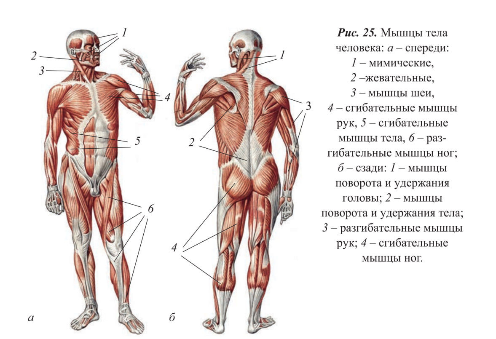

Згибательные мышцы отвечают за сгибание сустава, т.е. за уменьшение угла между двумя костями, которые образуют этот сустав. Примеры згибательных мышц: Бицепс плеча (m. biceps brachii): главный флексор локтевого сустава, который позволяет сгибать руку в локте. Илеопсоас (m. iliopsoas): основной флексор бедра, позволяющий поднимать ногу вперед. Лучевой сгибатель запястья (m. flexor carpi radialis): позволяет сгибать кисть в сторону ладони. Принцип работы: когда флексор сокращается, угол в суставе уменьшается. Например, при сокращении бицепса рука сгибается в локтевом суставе.
